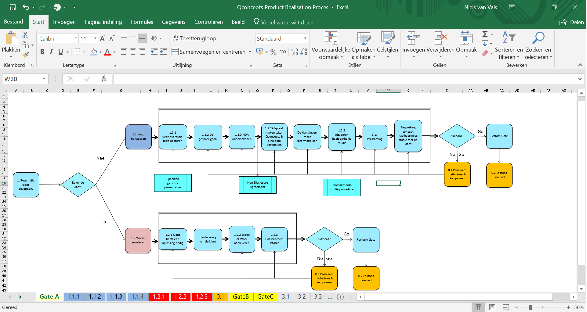
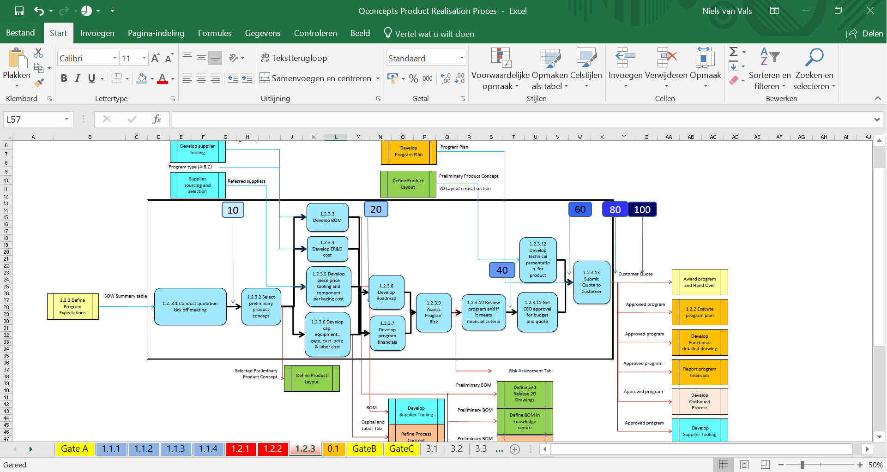
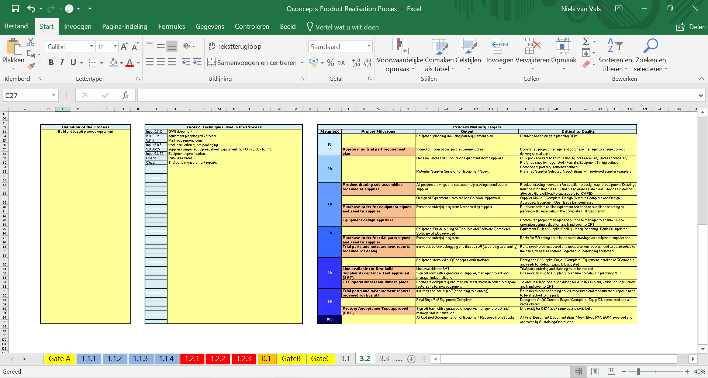

Het grootste onderdeel van de opdracht voor QConcepts was het optimaliseren van de organisatiestructuur door de processen in kaart te brengen. Er bestonden wel processen, echter zaten deze in het hoofd van de huidige medewerkers en werden deze onderling niet of nauwelijks gedeeld, wat resulteert in problemen indien een medewerker afwezig is. Ook brengt dit grote nadelen met zich mee als het bedrijf wilt kunnen groeien (wat QConcepts binnenkort op grote schaal gaat doen).
Wij hebben de processen op 3 niveaus in kaart gebracht. Niveau 1 het meest toegankelijke niveau voor klanten. Dit proces laat kort visueel zien wie QConcepts is en wat het bedrijf te bieden heeft / hoe het opereert. De niveau 2 & 3 processen zijn de processen die voor de medewerkers van belang zijn in hun dagelijkse werkzaamheden. Dit zijn ook de niveaus die in dit stuk aan bod zullen komen. Omdat het Product Realisation Proces (PRP), zoals wij dat dan noemen, een erg groot Excel bestand is (en omdat de afbeelding wellicht niet scherp genoeg weergegeven worden) kunt u het volledige bestand vinden met deze link.
Wij zijn begonnen door het process dat in het hoofd van de medewerkers zit in kaart te brengen. Hieruit concludeerden wij dat de processen (zoals Sales en Engineering) uit circa 7 stappen bestaat. Deze hebben wij visueel volgens de methode process modelling in kaart gebracht (zie onderstaande afbeelding).

In bovenstaand process hebben wij echter wel het een en ander aan toegevoegd (als onderdeel van onze optimalisatie opdracht). Dit zijn de oranje gekleurde boxen ‘’Probleem definiëren en aanpassen’’ en ‘’Learning Lessons’’, hierover later meer. Dit soort processen, dat vanuit het blik van de medewerkers is omschreven, noemen wij de niveau 2 processen of ‘’gates’’. Hierin hebben wij elke stap ook een uniek ID nummer meegegeven.
Omdat wij rekening moesten houden met het feit dat de processen gestandaardiseerd moesten worden zodat de organisatie rijp voor groei is, hebben wij de zogeheten niveau 3 processen ontwikkeld. Dit zijn bovenstaande stappen (uit de afbeelding) waarop is ingezoomd. Wij nemen als voorbeeld processtap 1.2.3 Haalbaarheidsstudie.
In onderstaande afbeelding is op een 3e niveau een processtap (1.2.3, onderdeel van het Sales process) in kaart gebracht. Dit hebben wij gedaan op basis van de huidige opbouw van een haalbaarheidsstudie binnen QConcepts, op basis van onze eigen ervaringen en op basis van de wetenschappelijke wijze van haalbaarheidsstudies maken. In dit proces heeft ook weer elke stap een uniek ID nummer meegekregen.

Naast het aangepaste process hebben wij ook wij ook nuttige informatie aan het process toegevoegd (zie onderstaande afbeelding). Wij hebben de definitie van het process omschreven, de tools & technieken die gebruikt worden in het process en de process voortgang in combinatie met milestones, output en ‘Critical to Quality’.

Deze niveau 3 processen hebben wij voor alle niveau 2 processtappen van het Salesproces (Gate A) en Process Development and Production (Gate C) gemaakt.
Daarnaast hebben wij de processen ‘’Probleem definiëren en aanpassen’’ en ‘’Learning Lessons’’ ook toegevoegd en op dezelfde wijze visueel in kaart gebracht. Deze processen heten 0.1 en 0.3.
Wederom verwijzen wij u graag naar onze drive link die bovenaan deze pagina te vinden is. Dan krijgt u een écht goed beeld van wat wij gedaan hebben op het gebied van processen in kaart brengen!